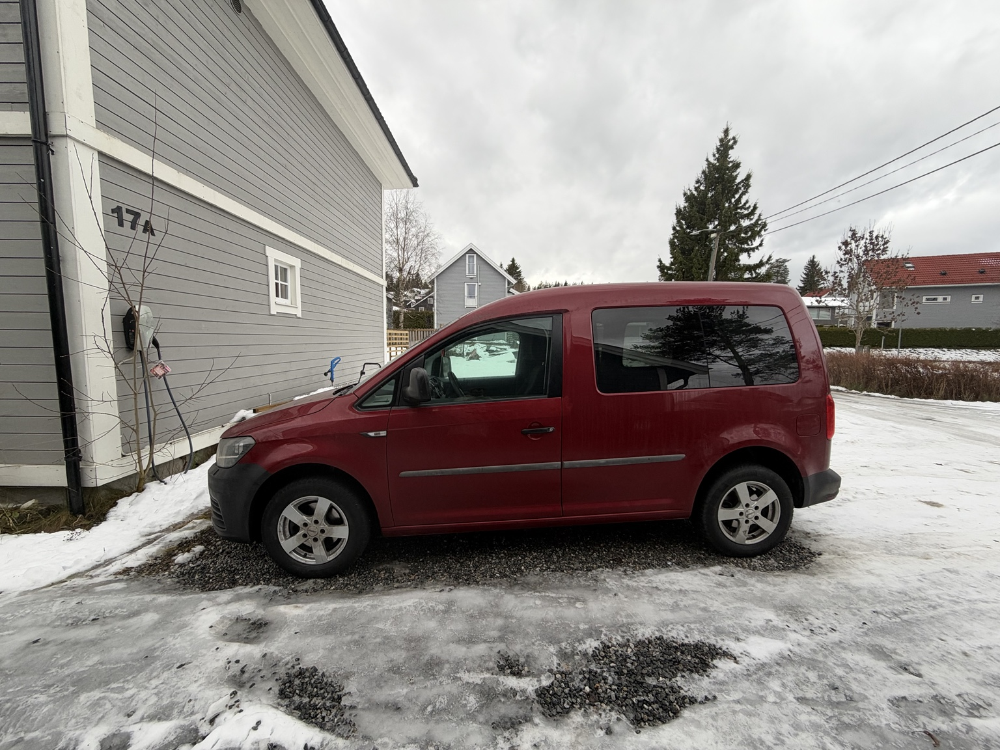

CaddY
ALL THE TECHNOLOGY. NONE OF THE CONNECTIVITY.
● 100 % offline

Min CaddY
2018 · Bensin · Manuell · Sjåførstyrt
Kupétemperatur
?? °C
Må kjennes med kroppen
Rekkevidde
Tja …
Spør bensinmåleren
♨ KlimakontrollManuell premium
22°C
Temperaturen er et ønske, ikke en ordre.
Hurtigkontroller
🏃 CaddY Fitness+Tesla: 0 skritt
Hver gang du må gå til bilen, vinner kroppen over teknologien.
CaddY-skritt
0Estimerte kalorier
0,0 kcalHumorteller: anslåtte skritt for utførte oppdrag. Ikke faktisk måling.
CaddY Intelligence™ · Powered by human legs
Parodi. Ingen forbindelse til bilen, Volkswagen eller Tesla. Ikke la motoren gå på tomgang i garasje eller andre lukkede rom. Følg lokale regler om tomgangskjøring. Kalorier er grove underholdningsestimater, ikke helsedata.